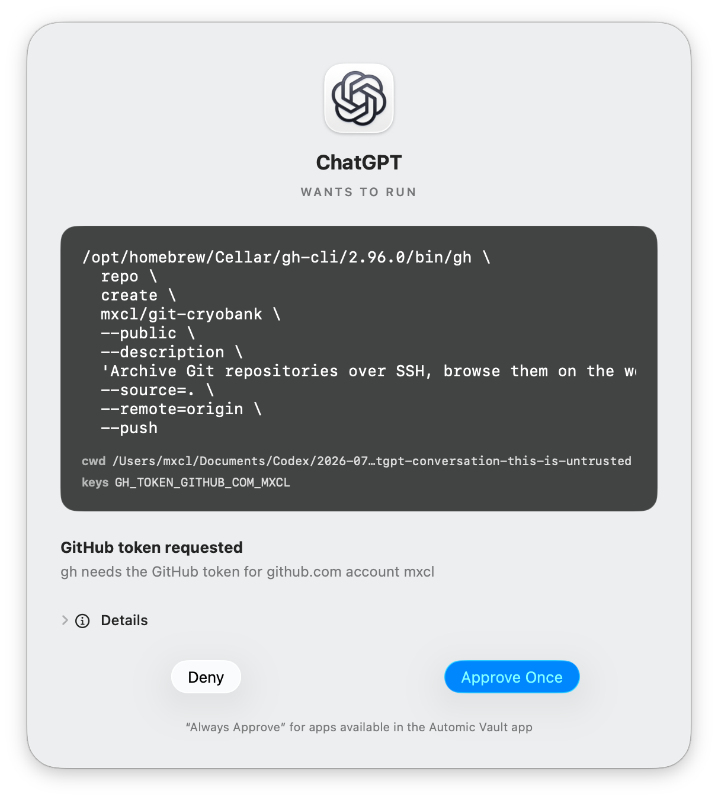
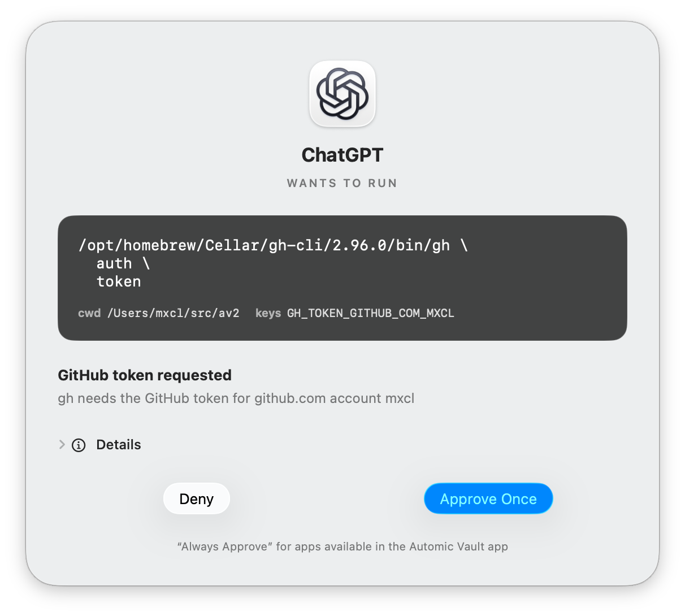
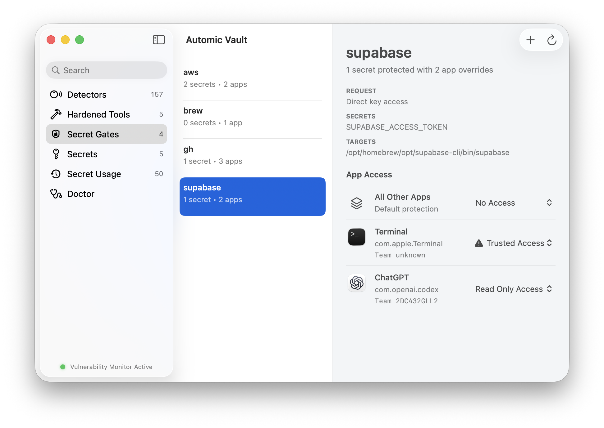
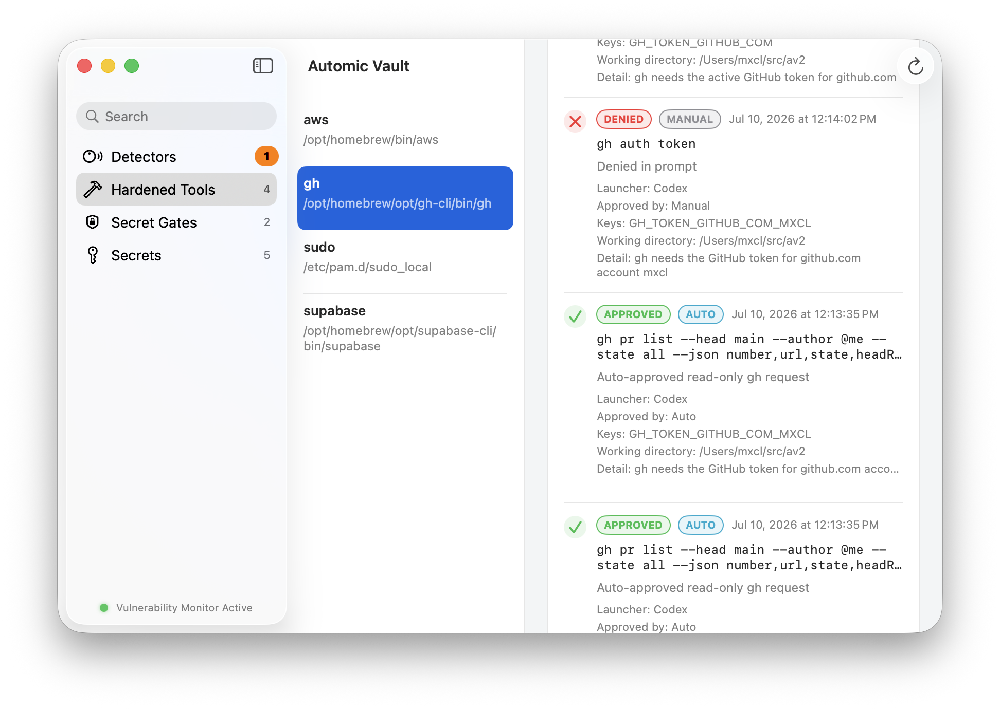
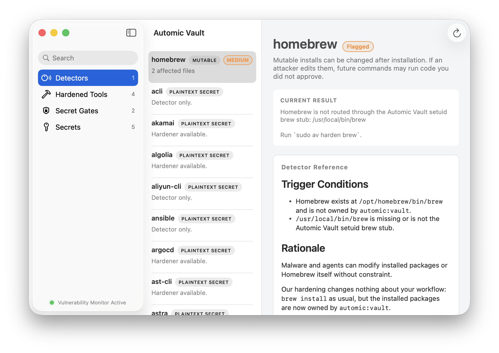
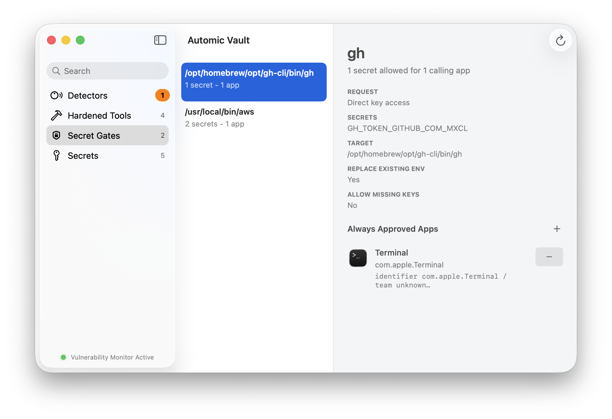

Is the vault open to you?
- Request
GITHUB_TOKEN - CheckUnlocked and allowed?
- ResultReturn the raw value
 Automic Vault
Automic Vault
From the creator of Homebrew
The missing secrets manager for developers.
Give agents read-only access to command-line tools like gh and aws. When they need more, a human must approve it on your Mac or a connected iPhone.

Deeper than guardrails. Zeroconf above the boundary: supported tools work with any agent, any harness, any app. Hardeners move those tools into a hardened state at the packaging layer, with their credentials stored in Automic Vault.
Most secrets managers check an identity and Secret Name before returning the stored value. Automic Vault does not sandbox your agent: it keeps supported credentials out of plaintext files and evaluates the complete Authorization Request before applying a Secret.
GITHUB_TOKENAn eligible Codex task or Claude Code session can receive a visible, in-memory Temporary Access Grant. It is bound to one Verified Launcher, Tool-specific Authorization Gate, accepted runtime posture, and Agent Task Context.
The active-time budget starts at ten minutes. You can end it immediately, and it never covers direct Secret access, mutation, disclosure, elevated application, or Unknown operations.

Automic Vault moves supported credentials out of readable Tool configuration. The Mac verifies the Launcher, Tool, Target, command, arguments, working directory, requested Secret Names, and selected Value sources.
Your existing commands keep working. Agents need no Automic Vault plugin.
Automic Vault controls Secret Application. After the handoff, the Target controls the Secret.
Terminal, Codex, and an unknown process can invoke the same executable. Automic Vault identifies the Verified Launcher and gives each Tool–Launcher pairing its own Authorization Policy.

Installed packages must cross the same boundary to use protected secrets. Supply-chain attacks such as the 2025 Shai-Hulud npm worm target credentials available to developer tools. Defense in depth still matters: run npm i in a dedicated terminal with low-to-no privileges in both Automic Vault and macOS TCC.
1 · iPhone
Open Automic Vault on an iPhone using the same iCloud account, enable iPhone Approval, and allow notifications.
2 · Mac
Open Settings → iPhone Approval on the Mac. Once enabled, every human Approval for that Mac goes to an eligible iPhone.
The iPhone carries your decision. The Mac still verifies the complete Authorization Request, rejects stale responses, records the decision, and enforces it. Secret Values and Authorization History stay on the Mac.
Routine requests can offer Approve Once in an authenticated notification. Unknown operation risk, Secret Disclosure, Unconstrained Secret Application, and security warnings require the full app. If the phone or relay is unavailable, the request waits until its Gate Client cancels. The Mac never restores an allow button.
iPhone Mirroring and Show on Mac can expose Approval controls on the Mac when biometrics are off. Disable them, or require Face ID or Touch ID on every eligible iPhone.
A Secret Name can have one Global Value and multiple Project Values. Automic Vault selects the nearest Value for the physical working directory, so every project can request API_TOKEN.
The Project Directory selects a Value; it does not grant authority. The complete operation still crosses the same Authorization Gate.
$ av save API_TOKEN
$ av save --project-directory=. API_TOKEN
$ av inject +API_TOKEN -- npm testNearest Project Value → Global Value
$ ./release continue
Agent input required:
./release agent:github-context
./release agent:cdn-status
Write NOTES.md, then run:
./release continueFixed entry points · Secret Values stay inside the script
A reentrant Blessed Script runs deterministic work until it needs agent input, then names the required output, fixed subcommands, and the command that resumes the workflow.
Every invocation is authorized separately. The agent can inspect context and return a result through reviewed entry points without general access to the underlying Tools, MCP servers, or Secret Values.
Design a reentrant scriptHarness guardrails govern one harness. Automic Vault works deeper: its Hardeners reconfigure or patch the credential-bearing Tool itself, so the same gate applies when Terminal, Codex, another harness, or an unknown process invokes it.
AWS, Docker, Homebrew, and project scripts use different credential paths. Each Hardener changes the path for one Tool.
~/.aws/credentials.brew update can run while installs still require Approval.Allowed or denied, policy or Approval: requests leave bounded Authorization History on your Mac with the decision, Launcher, Secret Names, command, and working directory.
Detectors also report supported plaintext, environment, Keychain, helper, Launcher, and configuration Findings, with concrete mitigation steps.


It controls supported Secret Application and sensitive Tool operations at the Local Execution Boundary. macOS handles general process and filesystem security. Root or kernel compromise and arbitrary local destruction remain outside the product boundary.
Code signing proves identity and integrity, not intent. A compromised Target can leak a received Secret. Project paths select Values, and agent task identifiers narrow grants. Neither establishes identity.
Read the security model and CLI manual
Automic Vault costs nothing. The optional paid iPhone app moves every human Approval off the computer running the command.